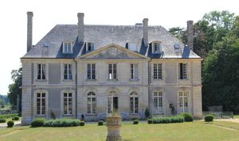
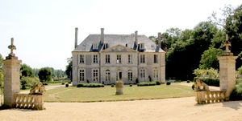
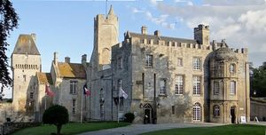
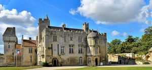
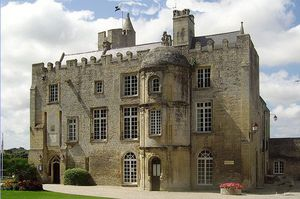
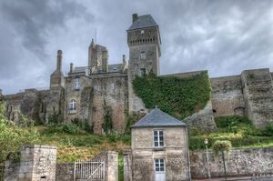
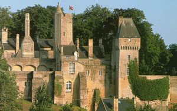
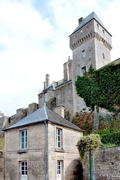

Recensement Jean-Claude Truffet








| Département | 14 — Calvados |
| Canton | Caen |
| Commune | Creully |
| Type d'édifice | Château |
| Période d'origine | XVII |
| Coordonnées GPS | 47° 17' 10" Nord, 0° 32' 22" Ouest GPS : 49° 16' 41,9" Nord, 0° 34' 40" Ouest |
CREULLET, ce château possède un seul étage et une haute toiture dans laquelle sencastre un fronton triangulaire. Cest avant tout une demeure de plaisance construite au début du XVIIe siècle, transformée quelques décennies plus tard et remaniée à plusieurs reprises. De vieux communs du XVe siècle subsistent, bien à part, mais compris cependant dans un bel ensemble, limités par une murette ornée de vases et de guirlandes de roses, une balustrade court entre deux portiques, seulement interrompue dans sa partie centrale pour prolonger la perspective bien au-delà de la pièce deau, longue de 200 mètres. De toute la lignée des possesseurs du château, il est malaisé dattribuer à tel ou tel la part prise dans lélaboration de la délicieuse ordonnance du domaine que nous admirons aujourdhui. Ce fut oeuvre de longue haleine. Si certaines parties intérieures du château peuvent remonter au temps des derniers Le Héricy (début XVIIe siècle), puis par alliance passe au Quincé, leurs colonnes surmontées de pots à feu, pourraient être du temps des Quincé passa aux Turgot et aux Crevel et en 1762 à Jacques-Thomas de Vauquelin, une de ses filles épouse Nicolas-Anne Morin de la Rivière, en 1829 le marquis cède Creullet à Casimir Guyon de Montlivault préfet du Calvados et conserve le domaine jusq'en 1841 date de l'acquisition pa la famille Rozée d'Infreville, dix ans plus tard achat de Creullet par les Labbey de Druval et à sa soeur madame Adam de la Pommeraie et par héritage Creullet est passé aux Moustier de Canchy.
CREULLY, est un édifice construit entre le XIe et XVIIe siècle. Il connut tout au long des siècles de multiples transformations et aménagements. Vers 1050 le château ne ressemble pas à une forteresse défensive. C'est à la guerre de Cent Ans que le château de Creully se modifie en place forte, vers 1360. Son architecture va subir des démolition en reconstructions à chaque occupation anglaise ou française, au cours de cette période. La tour carrée est surélevée au XIVe siècle et construction de la tour de guet au XVe siècle, pont-levis devant lentrée du donjon, qui sera détruit plus tard (XVIe et XVIIe siècle), fortification de la façade et destruction dautres bâtiments susceptibles de mettre en danger les habitants en étant assiégés. Quand finit la guerre, vers 1450, le château retourne aux mains du baron de Creully. Le château est ensuite démoli, sur ordre de Louis XI en 1461, par simple jalousie. Aux XVIe et XVIIe siècle, les barons laménagent. Comblement du fossé intérieur et destruction du pont-levis, construction de la tourelle Renaissance et des grandes fenêtres sur la façade en période de paix. Les communs qui sont danciennes écuries datent du XVIIe siècle, 22 barons de la même famille vont se succéder dans la demeure de 1035 à 1682. En 1682, le dernier baron de Creully, Antoine V de Sillans, vend le château à Colbert, ministre de Louis XIV, qui meurt l'année suivante sans l'habiter. En 1682, occupation du site par la descendance de Colbert. A la Révolution, celui ci sera confisqué et vendu à différents riches propriétaires terriens. En 1946 achat par la commune.
Creullet Jacques-Thomas de Vauquelin, Creully; baron de Creully
"
Creullet grav-1-2 Creully grav 3 à 7 GPS : 47° 17' 10" Nord, 0° 32' 22" Ouest GPS : 49° 16' 41,9" Nord, 0° 34' 40" Ouest